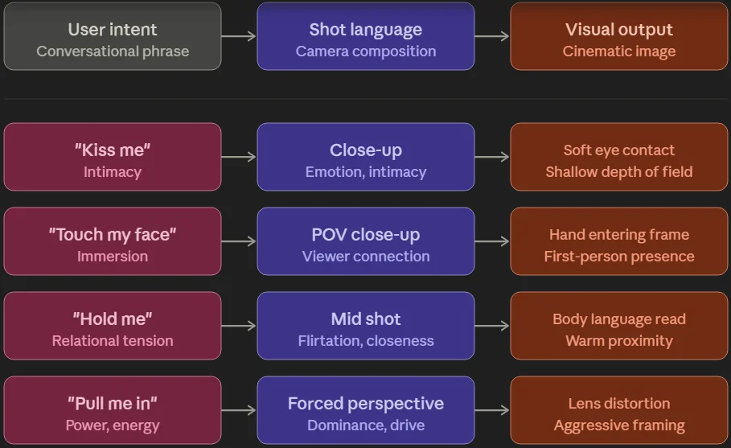
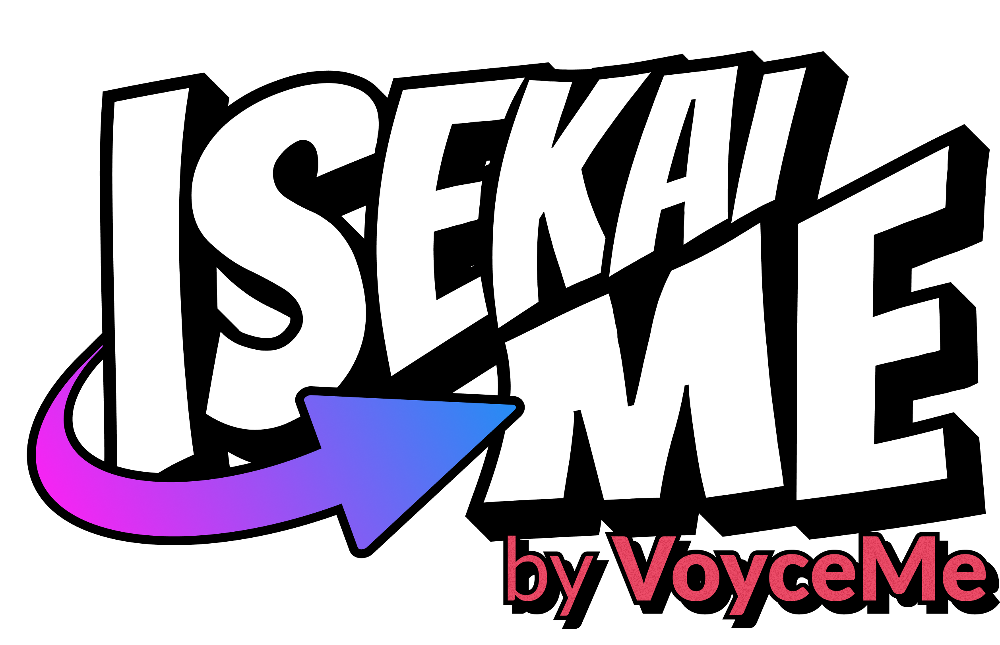

AI Lab · Methods, Systems & Experiments
Creative judgment, translated into systems.
I use AI as a creative production tool — not as a substitute for taste, authorship, or artistic judgment. My work focuses on turning visual direction into repeatable language, testing frameworks, and human-led workflows that improve quality without removing artists from the process.
Prompt Architecture · Visual Evaluation · Model Testing · Human-Led AI · Product Experiments
Anime illustration of a dark-skinned girl with braided black hair adorned with colorful beads, wearing a black shiny sleeveless unitard, gold hoop earrings, and gold cuffs, throwing a roundhouse kick, camera is looking up from below, action scene
Prompt sheet Reference
Reference

I treat prompting as visual systems design.
Production prompt engineering is not about finding impressive adjectives. It's the process of translating creative intent into structured instructions, isolating failure variables, testing repeated outputs, and refining the system until the result becomes reliable.
{{ step.label }}
{{ step.detail }}
I brought cinematic shot language into prompt language.
My art-direction background taught me to think in shots rather than descriptions. Instead of telling a model to make an image "more dramatic," I define the camera, staging, perspective, movement, subject hierarchy, and light behavior responsible for creating drama.
"{{ row.subjective }}"
{{ row.structured }}
I convert abstract creative feedback into instructions a generative system can execute and a creative team can evaluate.
Dark elf — camera authority, mood lighting, environmental story
"Fairy standing in a forest" leaves the camera and light undefined, so the model defaults to a flat, centered shot. Naming a low cinematic angle gives the model a camera position instead of a guess, and "mist swirling" plus "glowing mushrooms casting violet light" turns the setting into a light source that models the mood rather than just describing it.
Sexy fireman — mid-stride motion, implied lighting, emotional posture
"Standing confidently" is a static pose with no information about force or intent. Capturing the figure mid-stride gives the pose a direction and momentum, "helmet glinting" implies a specific light source without naming one, and "jaw set with determination" gives the model a legible emotional target instead of a vague mood word.
Elemental mage — force of nature, active verbs, focal hierarchy
"Elemental powers around them" is ambiguous about what those powers are doing. Naming molten earth, coiling flames, and arcing water gives each element an active verb, and placing the mage "at center of roaring vortex" establishes a clear focal hierarchy so the composition reads correctly instead of scattering attention across the effects.


Treating prompt as a hierarchy
"A lone swordsman crosses a ruined temple courtyard during a storm."
{{ layer.label }}
{{ layer.value }}
{{ layer.why }}
Validation criteria
Covers built from this hierarchy



Designing the experience around generation.
Prompt quality alone can't solve a weak user journey. For IsekaiMe, I explored how users could enter an AI creation experience through either guided narrative Storypacks or a faster, open-ended QuickGen workflow — mapping onboarding, content hierarchy, prompt suggestions, community output, and retention.
Better generation begins before the user writes the prompt.
Product Strategy · UX Research · Competitive Analysis
Quality needs a shared definition.
{{ layer.label }}
{{ item }}
Seven problems, worked through.
Click a row to expand the full diagnosis, change, and validation behind each outcome.
{{ row.problem }}
{{ row.value }}
⌄What I identified
{{ row.identified }}
What I changed
{{ row.changed }}
How I validated it
{{ row.validated }}
The experiment is only useful when it becomes a system.
My AI work sits between creative direction and technical implementation. I identify what strong visual output requires, translate those requirements into structured language, test them against real model behavior, and document what the wider team can reuse.